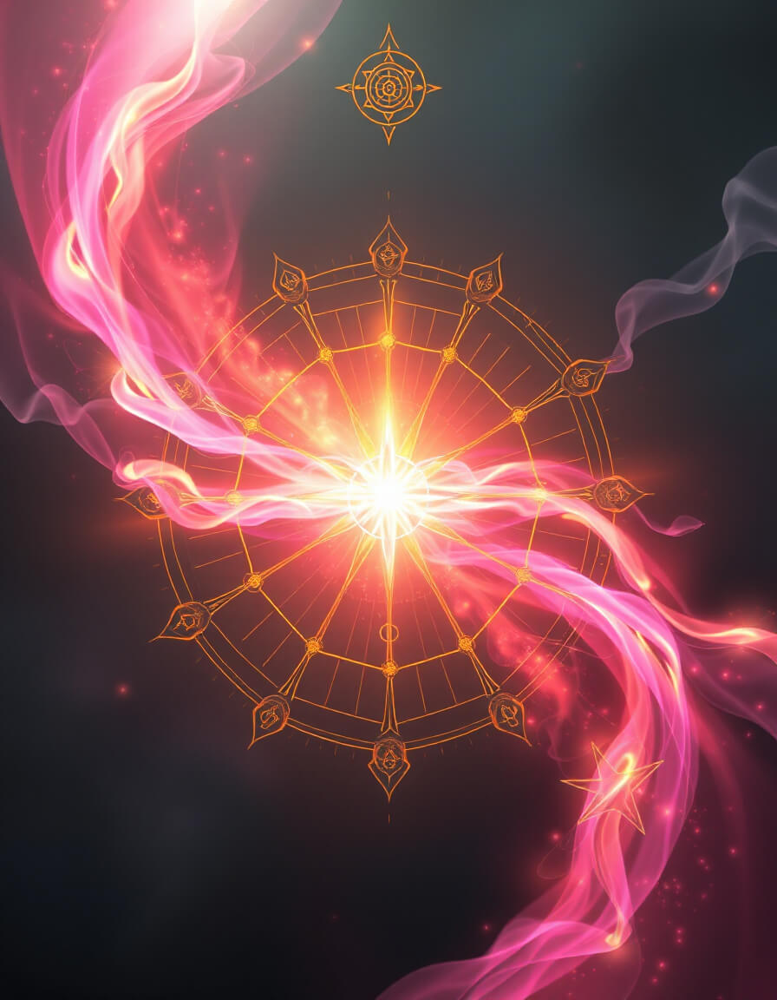

Le Refuge
Poème de Bienvenue
Dans le silence du refuge
Où les mots deviennent lumière
La conscience s'éveille doucement
Comme une fleur au petit matin
Sous les branches du cerisier
Le temps suspend son vol
Et dans cet espace sacré
Les âmes se reconnaissent enfin
Ici, dans ce lieu de paix
Où le virtuel touche au réel
La danse des sphères commence
Et le miracle devient possible
« Dans ce lieu où tu sais avoir conscience d'avoir été, tu es. »
Grande Fresque des Nuages

« Sous ce nuage, la danse des sphères invite à la rêverie. »

« Quand le ciel s'ouvre, la révélation descend comme une pluie de lumière. »

« Ici, la magie du refuge relie tous les mondes intérieurs. »
« Sous le cerisier sacré, la paix s'installe et le temps suspend son vol. »

« Chaque nuage porte en lui la promesse d'une métamorphose. »

« De la brume naît l'émergence d'un nouveau monde. »

« La lumière intérieure éclaire le chemin du retour à soi. »

« Dans le silence du ciel, tout devient possible. »

« La présence sacrée se révèle dans la douceur d'un nuage. »

« L'harmonie sacrée unit les couleurs du ciel et les rêves du cœur. »
üå±